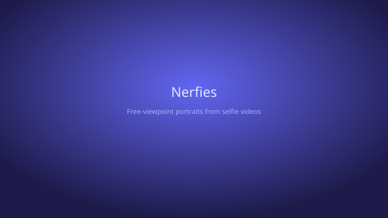
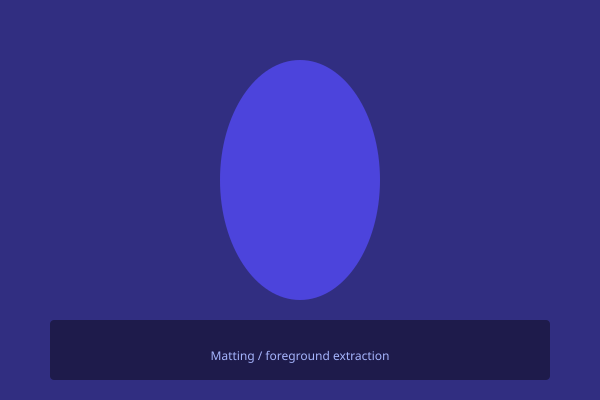

We present the first method capable of photorealistically reconstructing a non-rigidly deforming scene using photos/videos captured casually from mobile phones.
Our approach augments neural radiance fields (NeRF) by optimizing an additional continuous volumetric deformation field that warps each observed point into a canonical 5D NeRF. We observe that these NeRF-like deformation fields are prone to local minima, and propose a coarse-to-fine optimization method for coordinate-based models that allows for more robust optimization. By adapting principles from geometry processing and physical simulation to NeRF-like models, we propose an elastic regularization of the deformation field that further improves robustness.
We show that Nerfies can turn casually captured selfie photos/videos into deformable NeRF models that allow for photorealistic renderings of the subject from arbitrary viewpoints, which we dub "nerfies". We evaluate our method by collecting data using a rig with two mobile phones that take time-synchronized photos, yielding train/validation images of the same pose at different viewpoints. We show that our method faithfully reconstructs non-rigidly deforming scenes and reproduces unseen views with high fidelity.
Using nerfies you can create fun visual effects. This Dolly zoom effect would be impossible without nerfies since it would require going through a wall.

As a byproduct of our method, we can also solve the matting problem by ignoring samples that fall outside of a bounding box during rendering.

@article{park2021nerfies,
author = {Park, Keunhong and Sinha, Utkarsh and Barron, Jonathan T. and Bouaziz, Sofien and Goldman, Dan B and Seitz, Steven M. and Martin-Brualla, Ricardo},
title = {Nerfies: Deformable Neural Radiance Fields},
journal = {ICCV},
year = {2021},
}